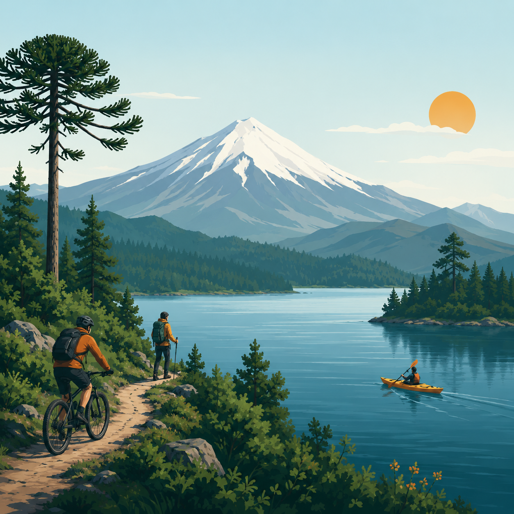

Trekking
Senderos panoramicos entre bosque nativo, miradores volcanicos y pausas interpretativas.
- Nivel minimo
- Basico
- Precio
- $15.000
- Cupo maximo
- 10
- Guia
- Andres Reyes
Pucón · Lunes a sábado · Salida 9:00
RutaSur ayuda a elegir tours según tu experiencia, disponibilidad y condiciones del entorno, con cupos controlados y guías especializados.

Nuestros tours
Todos los tours operan con cupos máximos por seguridad y validación previa de experiencia cuando corresponde.
Senderos panoramicos entre bosque nativo, miradores volcanicos y pausas interpretativas.
Ruta recreativa por caminos escenicos cercanos al lago, con ritmo adaptable al grupo.
Navegacion guiada en aguas tranquilas con foco en tecnica, seguridad y lectura del entorno.
Descenso coordinado por tramos de rio seleccionados segun caudal y condiciones del dia.
Salida tecnica en roca para personas con experiencia previa y manejo basico de equipo.
¿Que tour es para mi?
Basico: Trekking y Ciclismo, pensados para primeras experiencias al aire libre.
Intermedio: Kayak y Rafting, recomendados para quienes ya han realizado actividad aventura.
Avanzado: Escalada, orientada a personas con experiencia previa y buena condicion fisica.
Puedes contarle al asistente tu experiencia, la actividad que te interesa y la fecha aproximada. Te orientará según nivel, requisitos y disponibilidad.
FAQ
Para Trekking y Ciclismo no es necesaria. Kayak, Rafting y Escalada requieren mayor experiencia segun el nivel del tour.
Ropa comoda, agua, bloqueador, calzado adecuado y una capa impermeable ligera.
Depende de la actividad, el clima y la evaluacion de seguridad realizada por la agencia.
Primero se consulta disponibilidad y experiencia. Luego se confirma la reserva con los datos requeridos.
Si. Puedes pedir informacion general sin crear registro.
Solo cuando quieras reservar un cupo y entregar antecedentes necesarios para la salida.
Politicas y seguridad
Antes de reservar se revisa si el tour coincide con la experiencia declarada por la persona.
Cada actividad mantiene un maximo de participantes para cuidar la seguridad del grupo.
Se recomienda revisar condiciones climaticas y atender las indicaciones de la agencia.
Cancelaciones o modificaciones quedan sujetas a evaluacion operativa y de seguridad.
El registro es obligatorio solo cuando se confirma una reserva, no para consultar.
Anexos
Contacto
El asistente puede ayudarte a elegir un tour, revisar requisitos, orientar según tu experiencia y comenzar el proceso de reserva. Usa el contacto directo solo si necesitas resolver una situación especial.
Para dudas administrativas, cambios excepcionales o consultas que no puedas resolver por el asistente.
Pucón, Región de La Araucanía contacto@rutasur.cl +56 9 1234 5678